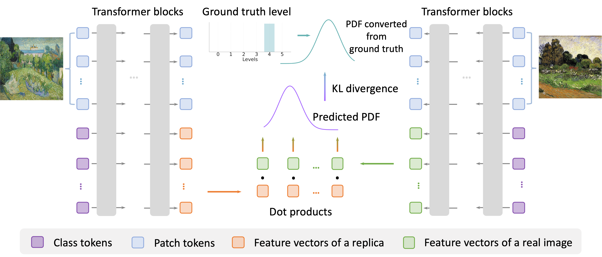

Some generated images (top) from diffusion models replicates the contents of existing images (bottom). In this paper, we introduce ICDiff, the first Image Copy Detection (ICD) specialized for diffusion-generated replicas.
Abstract
Images produced by diffusion models are increasingly popular in digital artwork and visual marketing. However, such generated images might replicate content from existing ones and pose the challenge of content originality. Existing Image Copy Detection (ICD) models, though accurate in detecting hand-crafted replicas, overlook the challenge from diffusion models. This motivates us to introduce ICDiff, the first ICD specialized for diffusion models. To this end, we construct a Diffusion-Replication (D-Rep) dataset and correspondingly propose a novel deep embedding method. D-Rep uses a state-of-the-art diffusion model (Stable Diffusion V1.5) to generate 40, 000 image-replica pairs, which are manually annotated into 6 replication levels ranging from 0 (no replication) to 5 (total replication). Our method, PDF-Embedding, transforms the replication level of each image-replica pair into a probability density function (PDF) as the supervision signal. The intuition is that the probability of neighboring replication levels should be continuous and smooth. Experimental results show that PDF-Embedding surpasses protocol-driven methods and non-PDF choices on the D-Rep test set. Moreover, by utilizing PDF-Embedding, we find that the replication ratios of well-known diffusion models against an open-source gallery range from 10% to 20%.
Comparison With Current ICD

The current ICD focuses on detecting edited copies generated by transformations like horizontal flips, random rotations, and random crops. In contrast, the ICDiff aims to detect replication generated by diffusion models, such as Stable Diffusion.
D-Rep Dataset

The percentages on the left show the proportion of images with a particular level.
PDF-Embedding

Initially, PDF-Embedding converts manually-labeled replication levels into probability density functions (PDFs). To learn from these PDFs, we use a set of vectors as the representation of an image.
Matching Results

Left: Examples of diffusion-based replication fetched by our PDF-Embedding. The accompanying percentages indicate the replication ratio of each model. Right: Examples filtered by SSCD. Compared to them, our results are more diverse: For example, the “Groot” generated by SDXL includes the whole body, whereas the original one features only the face; and the
“Moai statues” created by DeepFloyd IF are positioned differently compared to the original image.
Paper

Image Copy Detection for Diffusion Models
Wenhao Wang, Yifan Sun, Zhentao Tan, and Yi Yang
NeurIPS, 2024.
@article{wang2024icdiff,
title={Image Copy Detection for Diffusion Models},
author={Wang, Wenhao and Sun, Yifan and Tan, Zhentao and Yang, Yi},
journal={Thirty-eighth Conference on Neural Information Processing Systems},
year={2024},
url={https://openreview.net/forum?id=gvlOQC6oP1}
}Contact
If you have any questions, feel free to contact Wenhao Wang (wangwenhao0716@gmail.com).
Acknowledgements
This template was originally made by Phillip Isola and Richard Zhang for a colorful project, and inherits the modifications made by Jason Zhang and Shangzhe Wu. The code can be found here.